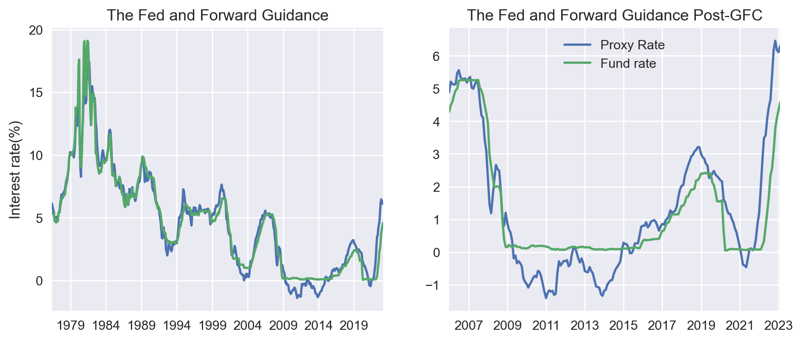
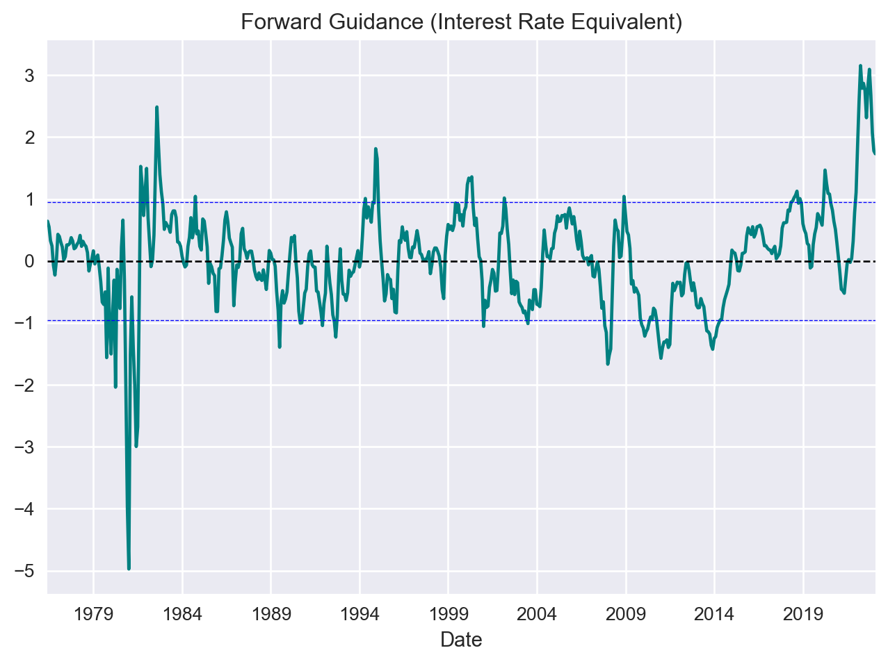
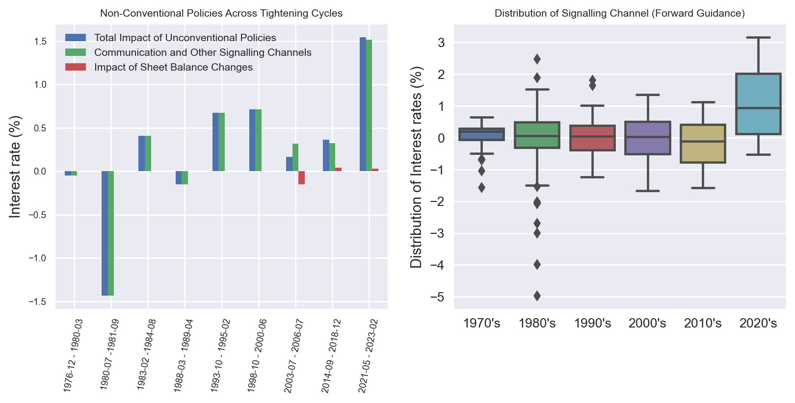
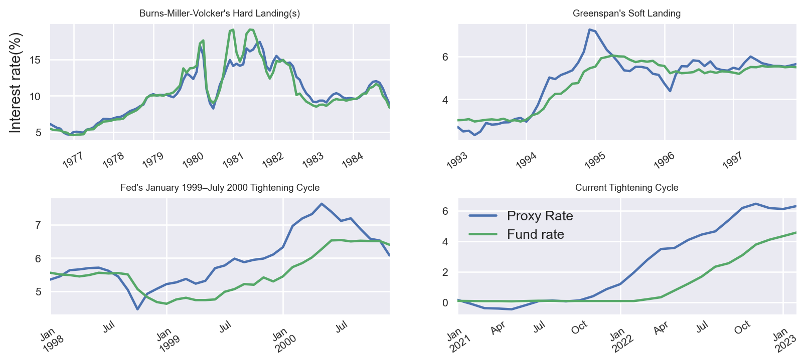

Fed’s Forward Guidance
Some Stylised Facts and recent performance
Monetary Policy
Inflation
- Over the past two years, the Federal Reserve has been criticized by a wide range of actors, including the International Monetary Fund (IMF), financial markets, top academic economists, and even its own top officials, for being too slow to act on inflation and maintaining a monetary policy stance that is too loose given record high inflation. However, many of these arguments still rely on backward-looking measures, such as the distance of the policy rate from neutral, as well as on “old-school” thinking that implicitly ignores how much of an impact forward guidance can have.
- In this post, I present a few key facts about how the Federal Reserve has used forward guidance in recent decades. I also discuss how the Fed’s credibility has added a record-high degree of extra tightening, which began much sooner than is publicly discussed or acknowledged.
Introduction
In the world of central banking, there are few policies that have been as widely discussed in recent years as forward guidance and balance sheet changes. These policy tools, known as non-conventional policies, define the broader monetary policy stance that goes beyond just setting the policy rate. For example, forward guidance is a method used by central banks to directly communicate or signal their intentions in order to shape expectations and influence interest rates in the desired direction. During the 2008 financial crisis, forward guidance and Quantitative Easing (QE) became especially critical tools, as the policy rate hit zero. In order to continue stimulating the economy, the Federal Reserve (Fed) needed to find new ways to do so. As Ben Bernanke put it, “we had to be creative.” Forward guidance allowed the Fed to do just that. More recently, forward guidance has played an important role in the ongoing debate over inflation. In this post, I will be looking at a few stylized facts about how the Fed uses this tool.
Measuring Unconventional Policies
One way to measure the Fed’s unconventional policies is to look at the “proxy rate”, which is published by the Federal Reserve Bank of San Francisco (See here and here). The proxy rate combines the Fed’s policy rate with the level of interest rate implied by the balance sheet changes and direct communication. Hence it incorporates the hypothetical interest rate that associates with the unconventional components of monetary policy.
I have plotted the proxy and policy rate in Figure 1 below. The proxy rate leads the actual policy rate because of the way monetary policy is implemented. Typically, the markets are set up in anticipation of a change in the policy rate before the change actually takes place. This pattern is (unsurprisingly) pronounced after 2007.
Before the global financial crisis, the proxy rate and the fund rate were closely correlated. However, they started to diverge after 2007, when quantitative easing (QE) and forward guidance became integral components of the monetary policy framework. During this period, the use of forward guidance amounted to a monetary policy stance of negative interest rates (validating the purpose that it was designed). These ultra-low interest rates persisted until 2014 according to the proxy rate. At that point the Fed started tightening its policy until the pandemic hit.
The Fed has been criticized (including by respected academics) for acting too slowly to address inflation, but the truth is that they began to tighten financial conditions well before the interest rate hikes. In fact, they started eight months before the first hike in March 2022, and almost a year and a half after the pandemic shock (Figure 1). This is important to note, because when the Fed changed course, inflation was mostly driven by supply-side factors, such as supply chain disruptions and labor shortages. This left less room for monetary policy to do much. However, the Fed clearly began to change course before the pressure from the demand side on inflation started to substantially pick up.
It’s worth emphasizing that even prior to the Global Financial Crisis (GFC), the proxy rate and the fund rate were not identical. Part of this discrepancy can be attributed to the inevitable measurement errors involved in calculating a statistical measure such as the proxy rate. Of course, it’s impossible to completely eliminate statistical errors, but we can reasonably assume that most of the difference between the proxy rate and the fund rate can be attributed to communication-related factors.
This evidence makes it clear that the inclusion of forward guidance and other unconventional tools has expanded the criteria by which the monetary policy stance should be evaluated. It is now clear that the Fed has become looser than it appears when stimulating the economy, and tighter than the policy rate indicates when tightening. As a result, it is becoming more important to get a better sense of the magnitude of the non-conventional aspects of monetary policy. The following paragraphs will examine this issue more closely.
“Until the Job is Done”
The difference between the proxy and policy rate shows the level of interest rate implied by the Fed’s forward guidance. Figure 2 shows exactly this. For example, at the peak of the proxy rate during this monetary policy tightening cycle, the Fed added an extra 3% to the policy rate by just pointing what will be doing. This means that until October 2022, the economy was effectively operating at an interest rate level closer to 6% than the official policy rate of 3%1. It was only after October 2022 that the proxy rate start coming off, signaling a less hawkish stance.

Fed’s tone shift was mostly evident in Jay Powell’s Jackson Hole speech last August who declared “the Federal Reserve must keep at it until the job is done”. The US stock market slid sharply after Powell spoke, with the benchmark S&P 500 index falling 3.4 per cent, while the tech-heavy Nasdaq Composite tumbled 3.9 per cent, recording the one biggest one-day decline for both indices (outside sudden crashes).
To put things in perspective, in Figure 3 I show the magnitude of this and other messages since 2020 and compare the unconventional part of the monetary policy to historical standards. The calculations are still based on the distance between the proxy rate and the policy rate. The left panel shows the average impact of communication-related factors across all tightening episodes since mid-70s as identified by the proxy rate. For the relevant periods, I have also filtered out the direct impact of balance sheet changes2. The right panel shows the distribution of the interest rates implied by forward guidance across each decades3.

Ben Bernanke once said that “monetary policy is 99% words and 1% action.” This was certainly true in the current tightening cycle, where the Fed’s words had an unprecedented impact. The Fed’s communication and signaling factors added (on average) an additional 1.5 percent of interest rates hikes, which is three times more than the most aggressive Fed of the past.
The credibility factor also played a role here. Before gaining the “credibility medal” the Fed struggled to convince the markets in the first two tightening cycles in Figure 3, even though it raised rates significantly. Things changed with Paul Volcker, but it wasn’t until forward guidance became part of the monetary policy transmission mechanism that markets started taking the Fed seriously.
Another way to look at the impact of the Fed’s messaging in recent years is to look at the right panel of Figure 3, where I have plotted the distribution of the impact of forward guidance (in terms of interest rates). The Fed is now more likely to be seen as hawkish than dovish, given its seriousness in fighting inflation and the fact that markets still have faith in its words. This was not the case in the 1970s and 1980s. It is also worth noting that the formal incorporation of forward guidance has managed to have a relatively even impact across different economic conditions, indicating some ability to weigh the balance of risks and fine-tune its words to the situation.
The implications for Soft Landing
In the meantime, the Fed has carried out the swiftest policy rate increase in the history of the United States. As I have briefly discussed in a previous post, the present interest rate level suggests that the impact on output is likely to be just as significant. This implies that the response from the Fed’s end has been sufficiently forceful in all areas under its direct control. It’s hard not to draw the conclusion that we are presently experiencing the most hawkish monetary policy position in recent US history, and its repercussions are just beginning to materialize4.
Does this mean that a soft landing is off the table? That’s a whole other discussion. But the short answer is “No”. In fact, the opposite is true. According to this evidence, the Fed’s actions are what kept a soft landing on the cards. And, this shouldn’t be surprising. Technically, only the Fed needs to comply to a soft landing because of its mandate to balance maximum employment and price stability. Other central banks don’t have this restriction5.
Nevertheless, soft landing is still the holy grail of central banking. R. Dornbusch famously said, “No postwar recovery has died in bed of old age—the Federal Reserve has murdered every one of them”. The most notable (and technically the only) soft landing in the most recent 16 business cycles occurred in 1994 under Alan Greenspan. Inflation was rising rapidly in 1994, and Greenspan raised interest rates seven times in the space of a year, bringing them up to 6%. This was a significant increase, but it did not cause a recession. In fact, the economy continued to grow throughout 1994 and 1995. Why was it successful? Economists will pick three main reasons:
- First, the economy was strong at the time, which helped to cushion the impact of the higher interest rates.
- Second, Greenspan was able to communicate his intentions clearly to the public, which helped to reduce uncertainty.
- Third, Greenspan was able to raise interest rates gradually, giving businesses and consumers time to adjust.
In Figure 4, I plotted this episode and compared it to the current tightening cycle. I also added the “Hard landing” of Volcker (which was essentially started by Burns and Miller) and the in-between tightening cycle of 1999 to make the case clearer. Before the 1980s, any comparisons are meaningless, as the Gold Standard was in place, there was a substantially different monetary policy framework, and fiscal dominance was the norm. I also ignored the tightening cycle that preceded the Global Financial Crisis (for obvious reasons) and the tightening cycle of 2018, as it was disrupted by the pandemic.

The Fed’s reaction function under Greenspan and now is quite similar, including making up for Friedman’s “long and variable lags.” However, unlike in the past, the use of unconventional tools allows the Fed to adjust its policy more smoothly and early on, without raising the policy rate. The three conditions that made Greenspan a legend continue to hold in some reasonable sense. The dynamics are also similar to the tightening cycle of 1999, which ended with the dot-com crash. However, as the “mini” banking crisis clearly demonstrated, the financial system is much more resilient today. Of course, there are some factors that are different between now and then, such as the starting level of inflation.
To conclude, a soft landing is primarily a fine-tuning exercise that is difficult to achieve, almost identical if not as elusive as timing the market. Based on the evidence here, the Fed has taken all necessary steps to achieve this goal and some of the necessary conditions for a soft landing are clearly met. But I do think that, overall, luck factors are more important than they were in the past6.
Footnotes
It is sometimes surprising to hear Fed officials (such as James B. Bullard) support their arguments for the appropriate policy rate by referring to the Taylor rule, without considering the effects of direct communication, including the signals that their analysis sends to the markets. But it is even more surprising that analysts, journalists, and strategists often perpetuate the flaws of such thinking.↩︎
To filter out the direct impact of balance sheet changes, I controlled for the change in 10Y Treasuries. This may not completely capture the full impact, but it should be close. Only the first round of QE was strong enough. Subsequent rounds were less effective as markets anticipated the Fed’s actions. That is the reason why Bernanke wanted more QE to offset these effects and compensate for the tight fiscal policy at the time. A classic study is the one by Krishnamurthy and Vissing-Jorgensen.↩︎
We can discuss about the level of interest rates, but as I have explained in an earlier post I am very critical of the standard practice in using the distance of the policy rate relative to the neutral rates to indicate how neutral monetary policy is.↩︎
Although, they still care about unemployment to avoid overshooting or undershooting inflation.↩︎
I call “luck factors” the factors that central banks cannot fully control, such as the indirect effects of monetary policy, base effects, and consumer and business behavior. These behaviors are generally stable and predictable have more uncertain indirect effects, hence making the “long and variable lags” of monetary policy hard to assess in real-time. Supply shocks are also “luck factors” from the policy-making point of view as central banks have no control on how to tackle them. The can of course try to respond by offsetting their impact, but this is not a good policy. It is far better to have governments address the source of the problem. In addition, a soft landing substantially depends on the pace at which central banks want to bring inflation down. A fast pace implies less chance of a soft landing, as it would require the real economy to be crashed. Too slow also reduces the chance of a soft landing, as there is a high chance that inflation expectations will become de-anchored or new unfavorable shocks might hit the system.↩︎